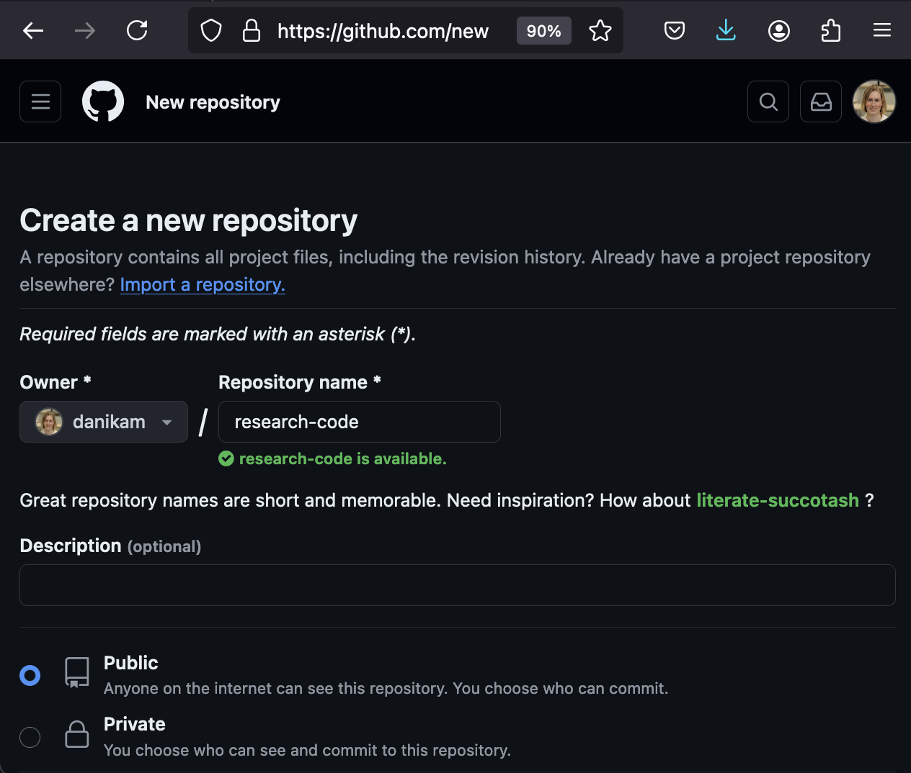

Collaboration with Git and Github
Lesson Objectives
- Review git commands
- Describe individual and collaborative workflows with git
- Introduce git commands for collaborative workflows
- Demo of collaborative workflows in practice
- See additional useful git tips/tricks
Acknowledgements
This material is heavily influenced by the previous works of Madicken Munk, Karthik Ram and James Howison from the previous summer and winter schools.
Other helpful/fun resources for git
https://git-school.github.io/visualizing-git/ https://pcottle.github.io/learnGitBranching/?NODEMO https://allisonhorst.com/git-github https://jvns.ca/blog/2023/11/23/branches-intuition-reality/ https://git-scm.com/docs https://swcarpentry.github.io/git-novice/
Workflows with Git: Individual
An Individual Workflow (without a remote)
commit, commit, commit …..
danikamacdonell@computer: ~/Git$ mkdir research-code ; cd research-code
danikamacdonell@computer: ~/Git/research-code$ git init
Initialized empty Git repository in /Users/danikamacdonell/Git/research-code/.git/
danikamacdonell@computer: ~/Git/research-code$ git branch -M main
danikamacdonell@computer: ~/Git/research-code$ touch README.md ; open README.md
danikamacdonell@computer: ~/Git/research-code$ git add README.md
danikamacdonell@computer: ~/Git/research-code$ git commit -m 'add README with code description'
[main (root-commit) 49c9e77] add README with code description
1 file changed, 0 insertions(+), 0 deletions(-)
create mode 100644 README.md
danikamacdonell@computer: ~/Git/research-code$ git log
Author: Danika MacDonell <danikamacdonell@computer>
Add a README with code descriptionAn Individual Workflow (with a remote)

commit push, commit commit push, commit push …..
danikamacdonell@computer: ~/Git/research-code$ git remote add origin git@github.com:danikam/research-code.git
danikamacdonell@computer: ~/Git/research-code$ git push -u origin main
Enumerating objects: 3, done.
[...]
To github.com:danikam/research-code.git
* [new branch] main -> main
branch 'main' set up to track 'origin/main'.With your code on a remote (like GitHub, GitLab, or an internal server for your lab), your work is easily accessed by peers!
💡GitLab and other Git platforms will have slightly different interfaces and features from GitHub, but the basic actions are generally pretty similar.
… But what about working with others?
Centralized Workflow
All members work on the same repository
git pull before starting work
Everyone commits to main
git push
If there is no merge conflict, 🙌
Otherwise fix merge conflict, then push
Feature Branching Workflow
Members work on the same repository but use individual branches to do feature development
Create and switch to a branch
Add commits
Push feature branch to GitHub
Start a pull request
Discuss, add more commits, merge
Some important commands for this workflow:
git branchgit checkout -b <branchname>git push -u origin <branchname>
.. add some more commits, then git push and open a pull request
Pull Requests
Pull requests are an excellent tool for fostering code review. If you’re using Github for team projects,you should be using these extensively.
Pull request best practices:
Try to make frequent, targeted pull requests that add a specific feature or set of features
✅ “Adds a new click feature for area layers in the geospatial mapping tool”
❌ “Adds the last 3 years of my thesis work”
Itemize each major addition.
A good practice is for someone else to merge your code into main, after being approved by at least one colleague. Sometimes a reviewer may not have merge rights; in these cases the requirement may be an approving review must be given before the feature is merged.
Pull request tip:
Using the github interface, you can change the target of a pull request. The default is to the main branch, but it could be another feature branch. This can be used if you want to help develop a feature branch outside of main with a collaborator.
⛔️ Never send a large pull request without notice 🙅
Demo: Update summerschool-July2024 (link to issue)
[...]: ~/Git/research-code$ cd ../summerschool-July2024
[...]: ~/Git/summerschool-July2024$ git checkout -b update-git-lesson
[...]: ~/Git/summerschool-July2024$ open README.md
[...]: ~/Git/summerschool-July2024$ git add README.md
[...]: ~/Git/summerschool-July2024$ git commit -m "Updating the Git/GitHub lesson."
[...]: ~/Git/summerschool-July2024$ git push -u origin add-git-lessonClose the issue!
Practice
cd ../research-code
Using the feature branching workflow:
Use at least two commits to:
Create a python script in the source directory called PrintMessage.py that prints a simple message.
Add a new section to the README to document the new script.
Make a pull request!
Forking Workflow
In this workflow each collaborator “forks” a copy of the centralized repository. These forks represent individual remote repositories for each collaborator. Collaborators submit pull requests from their forks to the centralized repository.
When do I need to fork?
- If you don’t have write access and want to suggest changes, forking makes sense.
- If you’re an active project collaborator with write access, use the branching workflow.
Forking Workflow Guidelines
Everyone has a fork of a “central” repository
Add commits to feature branches
Push feature branches to individual forks
Send pull-request from feature branch on fork to central repository
Extra Tips:
Tip #1: Always git pull before you start new work
Tip #2: Keep branch names descriptive
Tip #3: Generously use branches (but delete them when they’re merged or stale)
Tip #4: Use github command line tool (gh) to simplify your workflow
Practice
Make a fork of https://github.com/mcsc-impact-climate/urssi-research-code and Using the forking workflow, update the script source/PrintMessage.py to instead print out your name (or something similarly personalized).
danikamacdonell@computer: ~/Git/research-code$ cd ..
danikamacdonell@computer: ~/Git$ git clone git@github.com:danikam/urssi-research-code.git
danikamacdonell@computer: ~/Git$ cd urssi-research-code
danikamacdonell@computer: ~/Git$ git remote add upstream git@github.com:mcsc-impact-climate/urssi-research-code.git
danikamacdonell@computer: ~/Git$ git checkout -b personalize-messageAdd your new file(s), push and open a pull request
More useful git commands
Rebasing
Rebasing lets you pull new commits from the parent branch or upstream repo (if you’re on a fork).
From parent branch:
git fetch origin
git rebase origin/<parent-branch>From upstream forked repo:
git remote add upstream https://github.com/original-owner/repo.git
git fetch upstream
git rebase upstream/<parent-branch>branches are special labels that track a series of commits, but what if you want a special name for a particular commit (like when you released a new version of your code)? you can “tag” these
git tag -a <tagname> <hash>– useful for tagging a particular commit farther back in historygit tag -a <tagname> -m "tag message"– this should tag the current commit with a descriptive messagegit push origin <tagname>– push a particular tag up to your remotegit push origin --tags– push all of your tags up to your remote
amending a commit
Oh no! I made a typo in my commit message!
git commit --amend is useful for both fixing commit messages and for adding in files that were supposed to be committed and werent
cherry picking
What if you have a commit that really belongs on a different branch? Or in development you fixed a bug that you think should be in its own PR? You can “cherry pick” that commit to a new branch.
git cherry-pick <hash>
undoing changes
Reverting vs. Restoring
git revert <commit hash>
git restore <filename>
stashing changes
oh no! I started making changes but I’m not on the feature branch I thought I was!
git stash can be used to hide the changes in your working tree and then bring them back out with git stash apply when you’re on the appropriate branch
co-authoring changes
Have you pair programmed with a friend and come up with a solution together? How do you deal with attribution?
Co-authored-by: NAME <EMAIL> can add multiple authors to a commit.
More resources
GitHub Issues help you share code issues or feature requests with collaborators
Do you need to version control large files? git lfs and git annex are tools designed to help with this
How to undo almost anything with git link
Remove sensitive data (like private keys) from a repository link
Exercises
Choose one of the following:
- If you brought a project to work on: open an issue on your repository for something you’d like to improve that’s a beginner friendly issue. Describe the issue thoroughly. Then, working in groups at your tables, have a partner fork your project and submit a pull request fixing that issue. Do not merge the pull request today.
- Make a feature branch on your project and add a simple new feature to your project (could even just be some new info in the README). Submit a pull request on your project using that branch. Do not merge the pull request today.